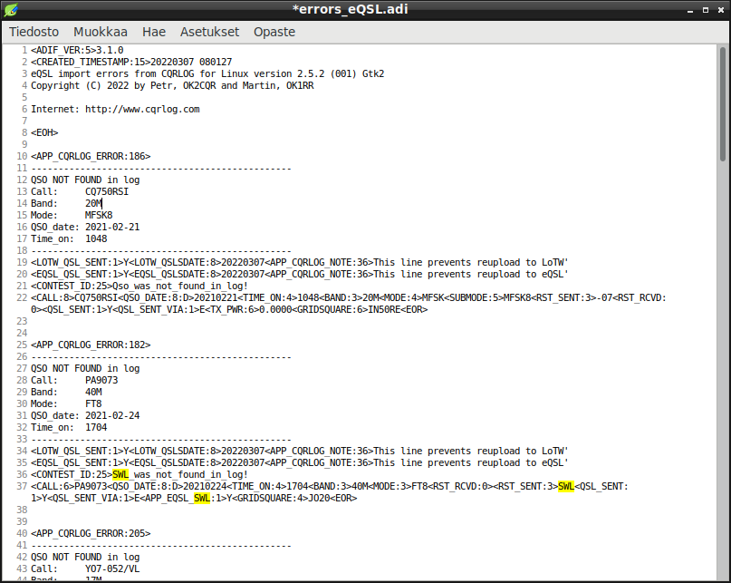

|
WARNING!
Backup your data often! BACKUP your log directory at the end of EVERY session!
All that you need to backup and store in a safe place is the log database directory
located in the ~/.config/cqrlog/database folder, or you can enable the autobackup function
in Preferences. This autobackup function creates an ADIF file with a backup of your log.
|
CQRLOG for LINUX by OK2CQR & OK1RR

LoTW/eQSL import errors
Preface
Sometimes you find some "QSO not found" errors in LoTW or eQSL download. There are some reasons for that.
- QSO did not complete and you did not log that, but the opponent station thinks it is completed.
- You forgot to set remote on and logged qso only to your digital mode program. (You find qso from it's log)
- People type in their old paper logs to computer and upload them to LoTW/eQSL. QSO is ok but it is somewhere in your earlier paper logs.
- QSO may be an SWL report waiting to confirm via eQSL
Those same errors keep appearing every time when you download from LoTW/eQSL. If you confirm or archive qso in eQSL that does not help as downloading always gives all qsos from given start date.
Only way to get rid of those errors is to add them into cqrlog. Cqrlog LoTW and eQSL error file names are now modified from ".txt" to ."adi" and file contents are suitable for adif import.
Operating with error files
If you just want to add all qsos that were not in your log you simply make QSO list/File/Import/ADIF using errors_LoTW.adi or errors_eQSL.adi file.
All qsos are added to your log with following additions:
- LoTW qsl sent and LoTW qsl sent date is set to current date
- eQSL qsl sent and eQSL qsl sent date is set to current date
- These prevent upload on next "Export only QSOs which has never been uploaded"
- Contest name is set to "Qso_was_not_found_in_log!" for all imported QSOs
- This allows quick find of all these kind of qsos using QSO list/Filter/Contest filter
If you do not want to import all error qsos, or want to send a confirmation to eQSL for SWL report, or confirm old paper log qso via LoTW you can do it
quite easy by modifying the errors_LoTW.adi or errors_eQSL.adi file with plain text editor before you import it to cqrlog..

Here is a sample eQSL error file opened with Leafpad editor (that shows line numbers at left side).
LoTW error file looks very similar, but has some text more for every qso record.
When you edit file do not touch the header of the file. Lines from 1 to 8 where header ends with "EOH" (End Of Header).
You can remove qso records that you do not want to import to your log by removing all record's lines. For example here remove the F-21716 qso means
to remove lines 10 - 23. Adif tag <APP_CQRLOG_ERROR:XXX specifies error label data lenght but it is actually not used for anything.
There are also other comments starting with <APP_CQRLOG_NOTE that are just for information.
NOTE:RST sent/rcvd are swapped to be ready for import to your log. I.E. senders RST_sent is placed to (your) RST_rcvd already.
(This concerns mainly eQSL as LoTW does not handle RSTs)
You just have to fix your RST_sent to proper value, as well as remove "LoTW/eQSL uploaded" mark if you want to upload this "found qso" to LoTW/eQSL after import.
SWL
Cqrlog fixes error record if adif tag APP_EQSL_SWL is found.
CONTEST_ID is changed to talk about "SWL" instead of "Qso". Then all imported SWL cards from this error file can be found fast by selecting Contest filter "SWL_was_not_found_in_log!"
RST_SENT is swapped to RST_RCVD as SWLs do report how heard you in RST_SENT tag.
RST_SENT is replaced as "SWL". This is your "report" for swl.
SWLs should report who they heard you working with. They should use QSOMSG adif tag. This is swapped to tag COMMENT to show up in "Comment for qso" in cqrlog. Without this informaton you can concider that swl report is not valid.
If you want to upload a confirmation for SWL after importing error file to cqrlog change "eQSL qsl sent" value with QSL list/File/Group edit from Y to N to cause upload to eQSL. This might be handy if you want to check several swl cards before uploading. Be careful not to touch "LoTW qsl sent" value as LoTW does not support SWLs.
Same way, if you want to confirm an old paper log qso now added to cqrlog on next upload/"Export only QSOs which has never been uploaded"
just change the eQSL and/or LoTW qsl set from value Y to N
With these properties handling of "not found qsos" should become a little bit easier